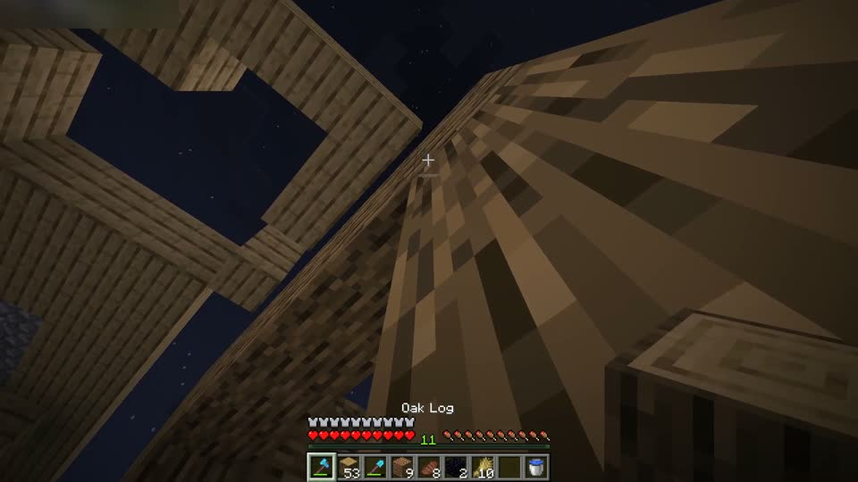
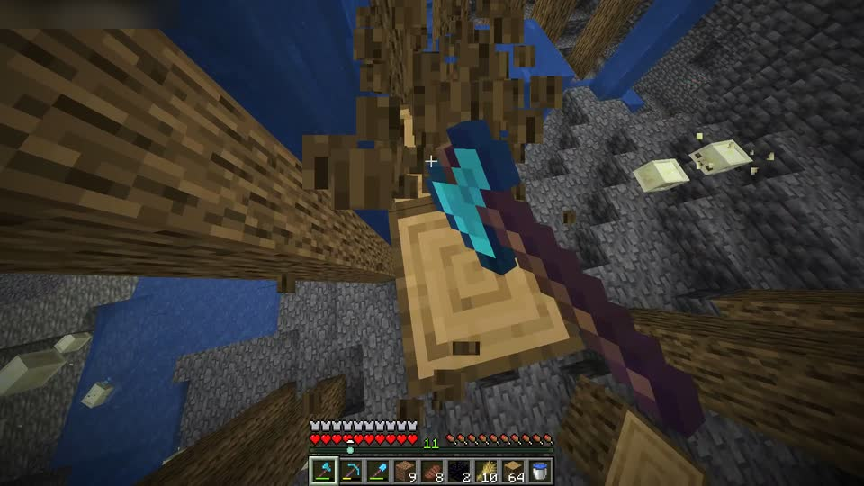
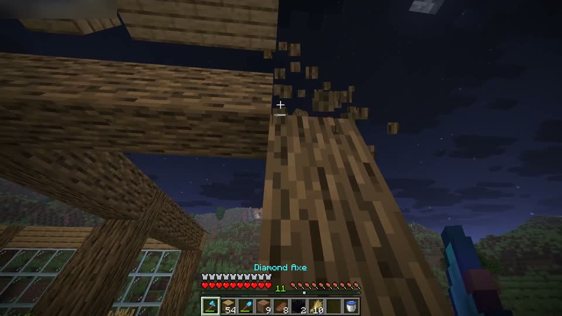

Keep the moment forever.
Kairo holds the last 30 seconds of your game and saves them the moment you press F8. Free on Windows, macOS and Linux.
Find any clip by typing
3 clips. Kairo names each clip after the game and keeps its tags, so search finds them.

Axe through the roofMinecraft · 0:30 · todayclutch
Down the mine in four hitsMinecraft · 0:15 · yesterdayclutch
Last log before sunriseMinecraft · 0:13 · trimmedclutch
Settings you can switch on
Say “clip that” and it saves.
Voice clipping listens on your computer, offline. Nothing you say is sent anywhere.
Keep recording after you press.
Catches the 2, 5 or 10 seconds after the save, so the reaction is in the clip too.
Record the whole session too.
Up to 5 hours in one file, with every F10 marker you set as a bookmark on its timeline.
Give voice chat its own track.
Turn Discord down in a copy without touching the game sound. Windows 11.
Show the keys you pressed.
WASD, Space, Shift and mouse buttons over the clip. Nothing else you type is kept. Windows.
It’s already recording.
The replay runs on your graphics card’s own encoder and lives in memory, so games keep their frames.
About Kairo
- MIT licence
- Version 0.2.0
- Code on GitHub
Kairo is named after kairos, the Greek word for the decisive moment, the one you only notice once it has passed. That is the whole idea: the last 30 seconds stay in memory, so the moment is still there when you reach for F8. It is free and open source, with no account, no ads and no watermark.
Nothing leaves your computer unless you make a share link or post to your own Discord channel. Every release is built from the public code on GitHub and checked against its published checksums before it updates itself.
Get Kairo for Download
The installer, kairo-v0.2.0-windows-x64-setup.exe (32 MB), sets Kairo up for you without administrator rights. It isn’t code-signed yet, so Windows may ask: choose More info, then Run anyway.
Also: Windows zip, no installer, macOS, Linux, checksums and every release.
Before you press F8
Is it really free?
Yes, all of it. There is no paid tier, no account, no ads and no watermark on your clips. Kairo is open source under the MIT licence.
Will it slow my games down?
Very little. The replay is encoded on your graphics card (NVIDIA NVENC, AMD AMF, Intel and others through Media Foundation, Apple VideoToolbox), with x264 as a fallback. Saving cuts the clip from what is already encoded, without encoding it again.
Where do my clips go?
Into Videos/Kairo as MP4 files named after the game, with the game, your microphone and voice chat on their own tracks. Change the folder in Settings. Nothing is uploaded unless you ask for a share link.
Windows says it protected my PC.
The installer isn’t code-signed yet, so SmartScreen doesn’t know it. Choose More info, then Run anyway. To be sure the file is the real one, compare it with SHA256SUMS.txt on the release page.
Does it work on macOS and Linux?
Yes. macOS 11 or newer on Apple silicon and Intel: allow Screen Recording when asked (desktop sound needs macOS 13). Linux on x86_64 with X11; on Wayland, bind the command kairo save to a key in your desktop’s settings.
I used Rewindr. Do I lose anything?
No. Rewindr was Kairo’s name before version 0.2.0. It updates itself to Kairo, or the installer replaces it, and your settings, clips and start-up setting carry over.